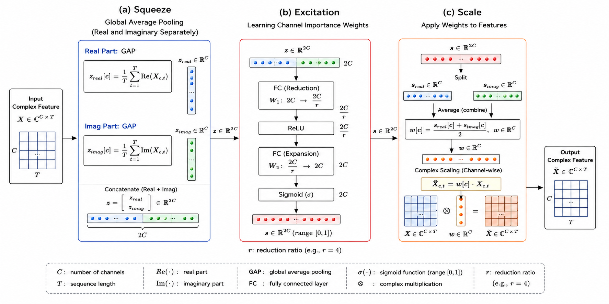
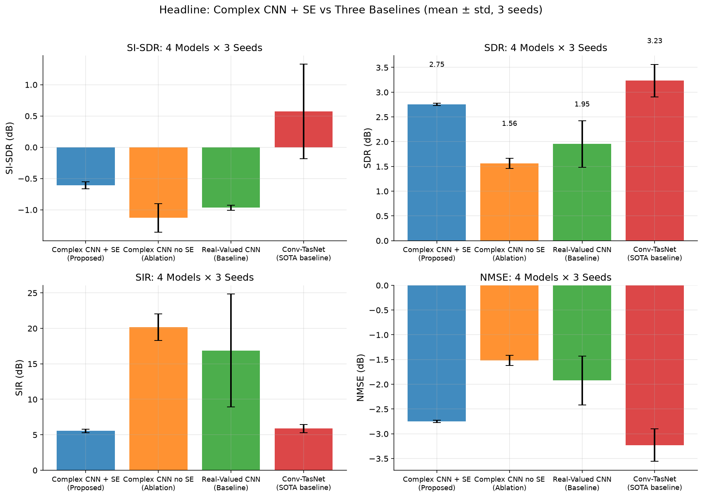
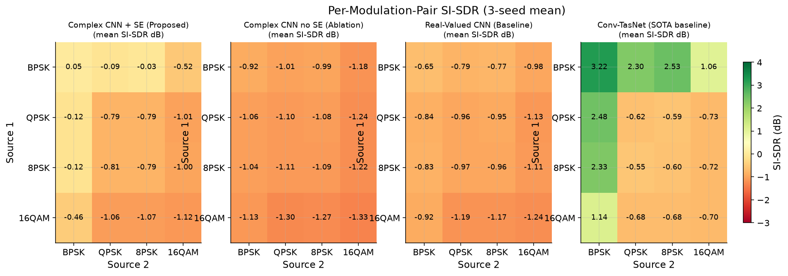
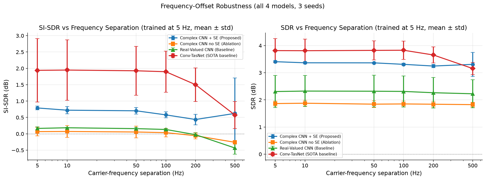
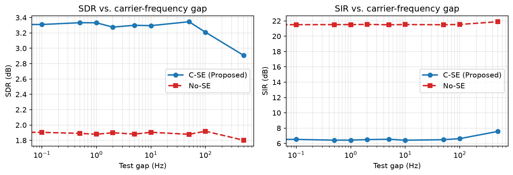
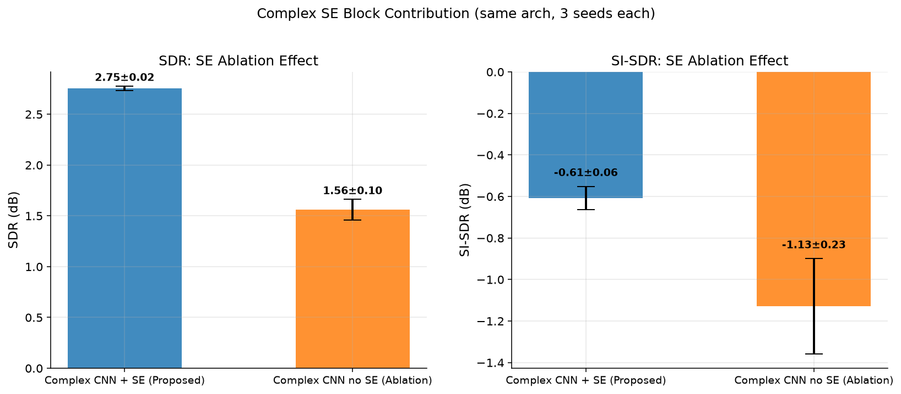
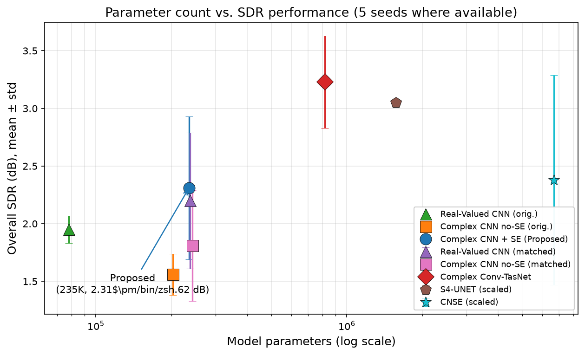

First phase-preserving, real-gated complex SE
To our knowledge, the first SE-style channel-attention mechanism designed natively for complex-valued feature maps. Real-valued gating weight preserves the I/Q phase coupling critical for demodulation.
A phase-preserving, real-gated complex-valued SE design for single-channel blind separation of near-co-frequency communication signals. Complex features end-to-end, 235K parameters, 5 seeds, evaluated against 4 ablation baselines and 2 cross-domain baselines.
Four things you should take away from this paper.
To our knowledge, the first SE-style channel-attention mechanism designed natively for complex-valued feature maps. Real-valued gating weight preserves the I/Q phase coupling critical for demodulation.
3.5× smaller than the comparable Complex Conv-TasNet, 28× smaller than CNSE. Five seeds per configuration with paired Wilcoxon tests; no comparison reaches $\alpha = 0.05$.
Without C-SE, 4 of 5 seeds collapse to a degenerate solution ($\text{SIR}\approx20 dB$). With C-SE, only 2 of 5 collapse. The failure is structural, not parameter-driven.
Trained on $\Delta f \sim U(0, 5)$ Hz, the model hits $\text{SDR}=3.33 dB$ at the unseen $\Delta f=0$ Hz limit and holds $\text{SDR}\approx3.3 dB$ across the entire $[0, 500]$ Hz range.
Everything you need to read the rest of the page. Skim if you are already familiar with SC-BSS, complex-valued networks, and PIT losses.
A radio receiver records one signal that is the sum of two or more unknown sources. Given the single mixed signal, recover the originals. With only one sensor, classical methods like ICA have more unknowns than equations—they cannot work in the single-channel case at all.
Deep learning sidesteps the underdeterminism by learning a prior over what the sources look like—for communication signals, that prior is "a sequence of constellation symbols shaped by a pulse filter and carried by a slow oscillator." Once the prior is baked into the network, separation becomes a Bayesian inference problem.
Where this matters. Spectrum surveillance, cognitive radio, electronic-warfare receivers, and non-orthogonal multiple access (NOMA) in 5G/6G.
Two transmitters on the same nominal frequency produce two I/Q waveforms whose carrier frequencies differ by only a few hertz—much less than the symbol rate. Classical time-frequency masking fails here because the two spectra overlap completely. The only handle left is the fine I/Q structure inside the shared spectrum.
In this paper the carrier separation is exactly $|\Delta f_1 - \Delta f_2| = 5 Hz$ at training time. The signal bandwidth is roughly $\sim 1 kHz$, so the two carriers overlap by more than 99.5%. We also test the extreme co-frequency limit $\Delta f = 0 Hz$ after retraining on $U(0, 5)$ Hz.
A digital communication signal is a complex baseband waveform: $s(t) = I(t) + j Q(t)$. Treating $(I, Q)$ as two independent real channels discards the algebraic structure: the phase $\varphi = \mathrm{atan2}(Q, I)$ encodes the constellation symbol, and the magnitude encodes the pulse envelope.
A complex-valued layer respects this structure. Complex convolution, complex batch-norm, and complex ReLU all follow the standard real/imaginary decomposition but keep the two parts coupled—the network can rotate or reflect the constellation without learning two redundant coordinate transformations.
Constellation view. Plotting every $(I, Q)$ sample at the symbol-rate produces the constellation diagram—a 4-point cloud for QPSK, a 16-point cloud for 16QAM. Recovering this structure is what makes the result useful for demodulation.
Each measures a different kind of separation error. SDR and SIR anti-correlate: improving one by suppressing interference usually degrades another by distorting the waveform.
In our 5-seed evaluation, two of the baselines (no-SE complex CNN, real-valued CNN) and one seed each of the proposed C-SE and Conv-TasNet converge to a degenerate solution: the decoder learns to produce near-zero masks, achieving low MSE by suppressing all output. The signature is unambiguous:
Both regimes sit at comparable loss values—one is not "better" than the other. The training trajectory (controlled by initial weights, dropout, data-order randomness, and GPU non-determinism) selects one apparently at random. Without multi-seed evaluation, you cannot tell which regime a single number came from.
Why this is a Paper 1 problem too. The collapse rate is structural to the complex-CNN training without attention: a model that can suppress all output cheaply will sometimes do so. The C-SE block provides per-channel gain factors that prevent any channel from being permanently muted, reducing the collapse rate from 4/5 to 2/5. It is not a complete fix; a more robust solution would require a different loss or architectural change.
Complex features end-to-end. A real-valued channel weight gates the complex feature map while preserving phase.


The naive lift of SE to complex data treats I and Q as two independent real channels and discards the multiplicative coupling that encodes constellation structure. Our C-SE design has three steps:
Why not a complex-valued weight? A complex sigmoid gate $\sigma(\mathbf{w}_r) + j\sigma(\mathbf{w}_i)$ would rotate the constellation depending on its phase. The averaged-real design avoids that rotation by construction—phase is preserved by design. The ablation in Table 4 confirms that the choice of scaling mode does not matter for accuracy: real, complex-mean, and separate-real-imaginary all reach $\text{SDR} \approx 2.75 dB$ within $0.01 dB$ spread.
A single strided complex convolution compresses the $T{=}4096$-sample complex waveform into a $512$-step feature sequence (8× temporal compression). The 8× downsample is matched to the symbol rate—we keep about one feature vector per symbol.
Four complex residual blocks (Conv → BN → ReLU → Conv → BN → C-SE → ReLU + residual). Each block contains a C-SE attention step. The blocks together carry the bulk of the 235K parameters.
The decoder is a 1×1 complex convolution producing two complex masks $\mathbf{m}_1, \mathbf{m}_2$. The estimates are $\hat{\mathbf{s}}_k = \mathcal{D}(\mathbf{m}_k \odot \mathbf{E})$ where $\mathcal{D}$ is the transposed-encoder mirror. The mask-bounded magnitude keeps the output in a stable range during training.
Five random seeds (42–46) for the proposed C-SE and the matched baselines; three seeds for the cross-domain baselines. SNR = 10 dB, all modulation pairs averaged.

| Model | BPSK–BPSK (easiest) | 16QAM–16QAM (hardest) | ||
|---|---|---|---|---|
| SDR (dB) | SER | SDR (dB) | SER | |
| Complex CNN + SE (Proposed) | 3.00 | 0.260 | 2.52 | 0.837 |
| Complex CNN (no SE) | 1.59 | — | 1.49 | — |
| Real-Valued CNN | 2.02 | — | 1.86 | — |
| Complex Conv-TasNet | 4.25 | 0.230 | 2.69 | 0.833 |
On the easiest case (BPSK–BPSK), Conv-TasNet excels with $\text{SDR}=4.25 dB$. On the hardest case (16QAM–16QAM), the proposed C-SE matches Conv-TasNet ($2.52 dB$ vs. $2.69 dB$, difference only $0.17 dB$) and the SER is nearly identical ($0.837$ vs. $0.833$).
| Model | Params | N | SI-SDR (dB) | SDR (dB) | SIR (dB) | Paired ΔSDR | Paired p |
|---|---|---|---|---|---|---|---|
| Complex CNN + SE (Proposed) | 235K | 5 | −0.66 ± 0.09 | 2.31 ± 0.62 | 11.35 ± 7.96 | — | — |
| Complex CNN no-SE (matched, H=70) | 242K | 5 | −0.98 ± 0.06 | 1.81 ± 0.48 | 18.01 ± 6.79 | +0.50 | 0.125 |
| Real-Valued CNN (matched, H=80, L=12) | 237K | 5 | −0.94 ± 0.07 | 2.20 ± 0.59 | 11.60 ± 8.24 | +0.11 | 0.0625 |
| Complex Conv-TasNet | 817K | 3 | 0.58 ± 0.92 | 3.23 ± 0.40 | 5.88 ± 0.70 | −0.48 | 0.25 |
| CNSE (scaled, Hou & Gao 2022) | 6.69M | 3 | 1.99 ± 0.21 | 2.38 ± 0.91 | 16.65 ± 8.65 | +0.38 | 0.5 |
| S4-UNET (scaled, Gao et al. 2026) | 1.57M | 3 | 0.01 ± 0.12 | 3.05 ± 0.00 | 5.77 ± 0.17 | −0.30 | 0.25 |
Honest conclusion: no comparison against C-SE reaches statistical significance at $\alpha = 0.05$. The smallest $p$-value is $0.0625$ (against the matched real-valued baseline), which is the smallest attainable two-sided $p$ at $N=5$ pairs. We position C-SE as a competitive operating point at the $235 K$-parameter scale on the dimensions of partial collapse-resistance, per-parameter efficiency, and predictable runtime—not as a statistically dominant architecture.

Trained on $\Delta f = 5 Hz$ and $T=4096$ only. We test how far the same checkpoint extrapolates.


| Signal length T | SDR (dB) | SI-SDR (dB) | SIR (dB) | NMSE (dB) |
|---|---|---|---|---|
| 2048 (half) | 2.52 | −1.31 | 5.99 | −2.52 |
| 4096 (train) | 3.33 | 0.58 | 5.67 | −3.33 |
| 8192 (double) | 2.85 | −0.49 | 6.21 | −2.85 |
The model transfers gracefully across a $4\times$ length range. The $T{=}2048$ drop is expected (fewer symbols per signal window); the $T{=}8192$ drop of $0.48 dB$ is a known limitation of fixed-kernel CNNs (compare with the recurrent SSM in Paper 2, which holds $\text{SDR} \approx 3.1 dB$ at $4\times$ the training length).
Three questions: does the C-SE block matter? Does the real-vs-complex scale mode matter? Does the pooling strategy matter?

| Scale mode | s42 SDR | s43 SDR | SDR (dB) | SER | Description |
|---|---|---|---|---|---|
| real (proposed) | 2.79 | 2.74 | 2.75 | 0.544 | Real weight, average of $\mathbf{s}_r$ and $\mathbf{s}_i$ |
| complex_mean | 2.76 | 2.76 | 2.76 | 0.544 | Complex-valued weight $\mathbf{s}_r + j\mathbf{s}_i$ |
| separate | 2.75 | 2.77 | 2.76 | 0.545 | Two independent real weights applied to I and Q separately |
All three modes perform nearly identically (SDR spread $\le 0.01 dB$). The simpler real mode is sufficient: the choice between these is not performance-critical. This experiment does not establish that complex phase is irrelevant to SC-BSS in general; the complex_mean variant does not constitute a fair test of complex phase.
| Pooling | SDR (dB) | SI-SDR (dB) | SIR (dB) | NMSE (dB) | Description |
|---|---|---|---|---|---|
| mean (proposed) | 2.74 | −0.65 | 5.73 | −2.74 | $\mu(\text{Re}), \mu(\text{Im})$ |
| power | 2.71 | −0.66 | 5.55 | −2.71 | $\mathbb{E}[\text{Re}^2], \mathbb{E}[\text{Im}^2]$ |
| magnitude | 2.74 | −0.65 | 5.74 | −2.74 | $\mathbb{E}[|\text{Re}|], \mathbb{E}[|\text{Im}|]$ |
| mean+power | 1.58 | −0.78 | 21.20 | −1.49 | Concatenation of mean and power — collapses |
The three single-statistic variants (mean, power, magnitude) all reach $\text{SDR} \approx 2.7 dB$ with stable SIR. The mean+power variant consistently collapses to the same $\text{SIR} \approx 21 dB$ signature as the no-SE baseline—confirming that the SE block needs 2 channels of statistics per channel (one for I, one for Q), not 4. The $0.04 dB$ spread across the three single-statistic variants is within seed-level noise.
Measured at signal length $T=4096$ on a single NVIDIA RTX 4060.

| Model | Params | GFLOPs | GPU (ms) | CPU (ms) | Peak mem (MB) | Throughput (bs=1) |
|---|---|---|---|---|---|---|
| Complex CNN + SE (Proposed) | 235K | 3.27 | 2.43 | 30.9 | 170 | 438 /s |
| Complex CNN (no SE) | 203K | 3.27 | 1.89 | 32.8 | 169 | 553 /s |
| Real-Valued CNN | 78K | 1.26 | 0.39 | 5.0 | 57 | 2,652 /s |
| Complex Conv-TasNet | 817K | 12.76 | 9.54 | 40.6 | 60 | 105 /s |
The proposed C-SE improves single-sample latency ($2.43$ ms vs. $9.54$ ms for Conv-TasNet) and parameter count while trading off activation memory (170 MB vs. 60 MB) and batched throughput. The real-valued baseline at 78K params has the highest throughput by a wide margin; the SE block's 32-channel sigmoid FC adds non-trivial cost at $bs \ge 16$.
A frank accounting of what this paper does and does not claim.
Honest answer: the paired Wilcoxon $p$-value is $0.125$, which does not reach $\alpha = 0.05$. With only 5 paired seeds the smallest attainable two-sided $p$ is $0.0625$ (achieved against the matched real-valued baseline). We do not claim C-SE is statistically superior; we claim it is a competitive operating point on the dimensions of partial collapse-resistance, per-parameter efficiency, and predictable runtime.
CNSE and S4-UNET were originally designed for RTX 5090D (32 GB) and we re-implemented them at scaled-down widths to fit our 8 GB GPU (CNSE 6.69M, S4-UNET 1.57M parameters, vs. the original ~50M for CNSE). The reported numbers should be read as approximate upper-bound comparisons rather than direct reproductions. A per-component fidelity check (HiPPO initialisation, DPLR parameterisation for S4; RP preprocessing for CNSE) is left to future work.
The synthesis pipeline covers the dominant physical effects (RRC pulse shape + multipath + AWGN + random carrier offsets) but cannot capture hardware imperfections (DC offset, I/Q imbalance, phase noise, AGC dynamics). We ship data_radioml.py as an optional loader for the public RadioML 2016.10A corpus so the community can extend the evaluation. The headline numbers do not use it.
Compute budget: 5 seeds for the proposed C-SE and matched baselines is ~32 GPU-hours on the RTX 4060. Conv-TasNet, CNSE, and S4-UNET are limited to 3 seeds each due to the larger model size and longer convergence. The smallest two-sided $p$ at $N=3$ is $0.25$, so the cross-domain comparisons are inherently inconclusive regardless of which seed numbers we picked.
At the $235 K$-parameter scale the matched real-valued baseline reaches $\text{SDR} = 2.20 \pm 0.59 dB$—only $0.11 dB$ below the proposed C-SE ($p=0.0625$, borderline). The C-SE's main strength is therefore not raw SDR but the combination of (i) lightweight capacity, (ii) complex-domain phase preservation, and (iii) partial collapse-resistance at $235 K$ parameters.
All three are left to future work. The architecture should generalise—complex-valued processing is modulation-agnostic—but the model would likely need a wider bottleneck, longer training, or a different mask-head design to handle denser constellations. Real timing offsets require a different data generator and a Symbol-Error-Rate pipeline that can compensate per-sample residual timing drift, which our current SER pipeline cannot.
Only 5 training seeds (3 for cross-domain baselines; a 6th–10th would tighten the paired Wilcoxon estimates). BPSK/QPSK/8PSK/16QAM only (no 64QAM, no OFDM). No real-captured co-frequency data; RadioML 2016.10A shipped as an optional loader. Cross-domain baselines are re-implementations at scaled-down widths, not direct reproductions. Symbol timing is generator-aligned (not real). Output collapse is documented empirically but not theoretically analysed. No claim of statistical dominance over any baseline.
data_radioml.py loader is shipped but not used in headline results; extending the evaluation to a public I/Q corpus is the most important direction.complex_mean scale-mode ablation does not constitute a fair test of complex phase. A polar parameterisation that preserves phase by construction is the natural follow-up.If you use this work, please cite the paper.
@article{nong2026cse,
title = {A Lightweight Complex-Valued CNN with Complex
Squeeze-and-Excitation Attention for Single-Channel
Blind Source Separation of Co-Frequency Communication
Signals},
author = {Nong, Bin and Fu, Weihong and Jiang, Zhuoyun},
journal = {Wireless Personal Communications},
year = {2026},
note = {Under review (R1 $\to$ R2)}
}data_radioml.py shipped in paper1_cnn_se/